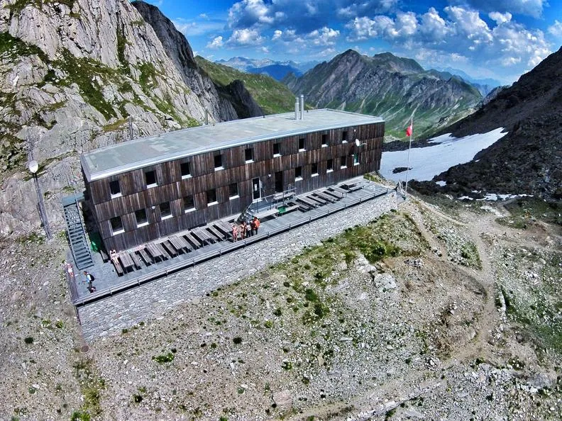
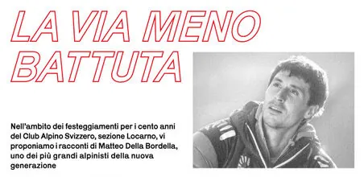

Ancora posti disponibili per la gita del 4 e 5 settembre al Cristallina

Con gli amici del SAC Weissenstein, abbiamo pianificato questa gita aperta a tutti….
Avvicinamento alla capanna Cristallina, passando per il Passo San Giacomo, il Passo Grandinagia e il canale del Becco con una puntata alla Cima di Lago.
In capanna ci attende poi una serata con le ottime leccornie del nostro guardiano Manu
Ma non è ancora finita…..
Domenica salita in vetta al Cristallina passando per il Poncione della Forca di Cristallina. Discesa verso il passo del Naret e la Val Torta fino al fondovalle.
Altre notizie
Tutte le news
Serata con l’alpinista Matteo Della Bordella
Vi invitiamo alla serata con l’alpinista Matteo Della Bordella. Organizzata dal CAS Locarno nell’ambito dei festeggiamenti per i 100 anni del sodalizio. 17 Settembre ore 20:00 presso Gran Rex, Locarno Certificato COVID…

Corso di racchette 2022
Sono aperte le iscrizioni al corso di racchette 2022. Per maggior dettagli vedi: https://www.casticino.ch/corso-racchette/

Sabato 14 agosto 2021 – Incontro con uno dei più grandi alpinisti italiani
Sabato 14 agosto 2021 alle 20:30 a San Bernardino Incontro con Fausto De Stefani, secondo alpinista italiano dopo Reinhold Messner ad aver scalato tutte le quattordici vette superiori agli 8000 metri. Entrata libera…